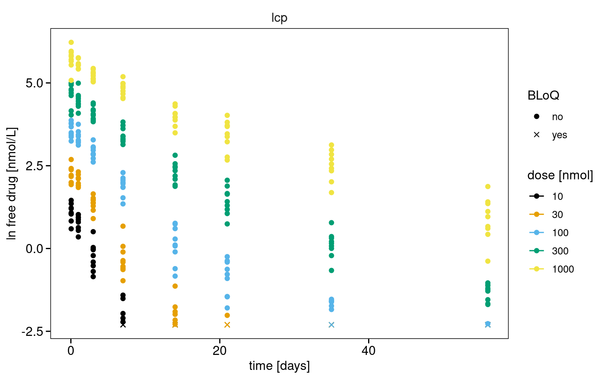
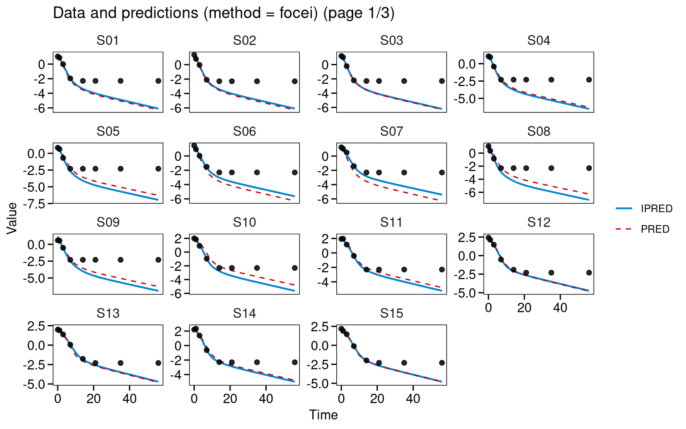
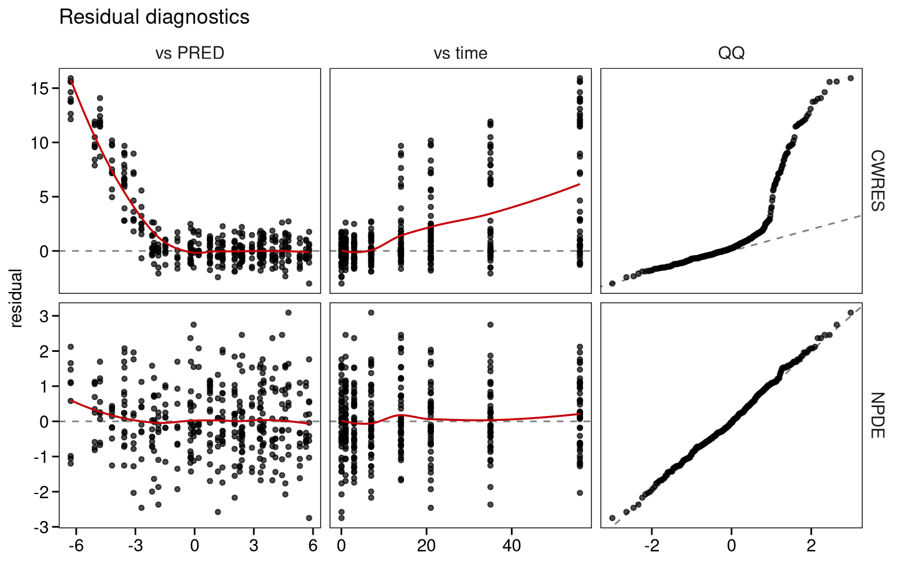
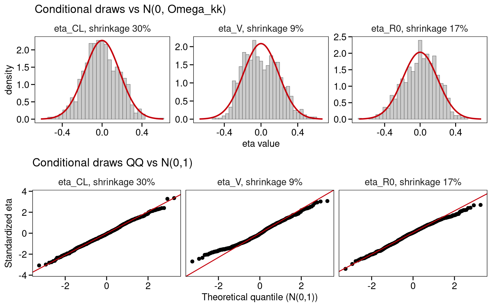
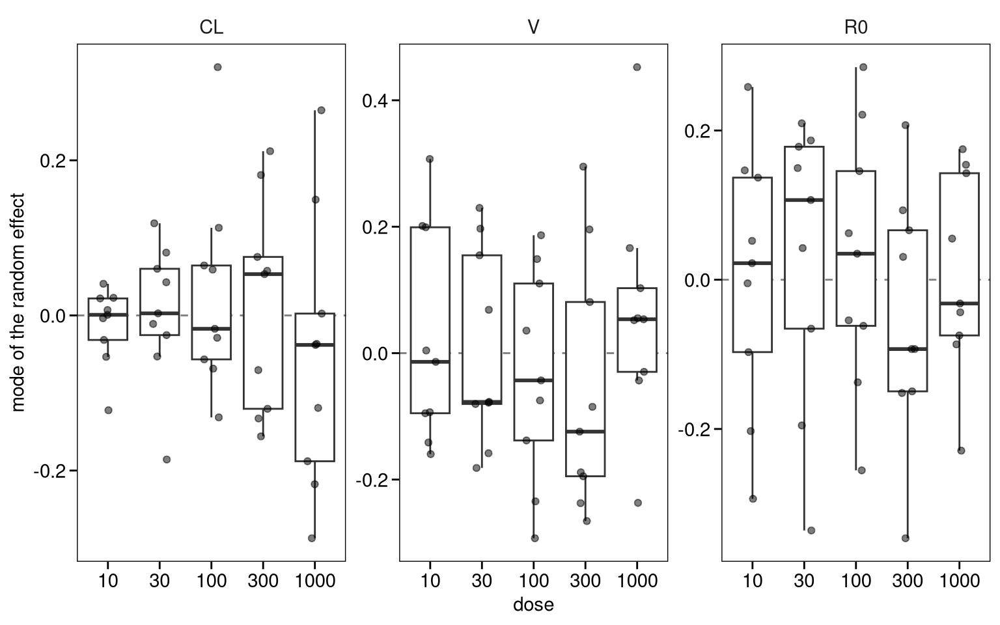
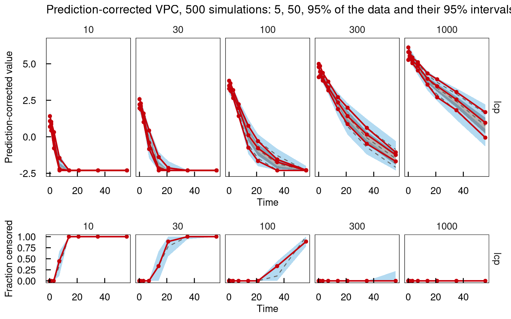

[1] TRUE TRUE TRUE TRUE TRUE TRUE
Shows: steadyStates(), log10Transform(),
symmetryDetection(), randomEffects(),
em(), vcov(), plotVPC(),
plotResiduals().
Simulated target-mediated drug disposition: steady state, identifiability, censored readings, FOCEI and quadrature.
Files
| file | content |
|---|---|
analysis.R |
the analysis, shown below |
results/cache.rds |
saved fits; delete it to fit again, on Windows with
cores <- 1 in analysis.R, where
parallel::mclapply() runs on one core only |
Run
With this folder as working directory:
source("analysis.R").
library(dMod2)
dir.create("build", showWarnings = FALSE)
# generated sources and shared objects in build/, reused when nothing changed
options(dMod2.outdir = "build")
cores <- max(1L, min(20L, parallel::detectCores() - 2L))
nstart <- 100L
# fits are saved in results/cache.rds under a key and read from there when present; delete the
# file to fit everything again
cached <- function(key, expr) {
file <- "results/cache.rds"
dir.create("results", showWarnings = FALSE)
store <- if (file.exists(file)) readRDS(file) else list()
if (is.null(store[[key]])) {
store[[key]] <- expr
saveRDS(store, file)
}
store[[key]]
}
# a fit of em() cached without the model, which an evaluation at the fit estimates restores
cachedEm <- function(key, obj, random, start, control = list(), ...) {
model <- c("design", "prdfn", "errfn", "data")
f <- cached(key, { f <- em(obj, random, start, control = control, ...); f[model] <- NULL; f })
f[model] <- em(obj, random, f$argument, control = modifyList(control, list(trustControl = list(iterlim = 0))),
verbose = FALSE)[model]
f
}
dm <- c("forward", "reverse", "forward-reverse")Model
Concentrations in nmol/L, time in days; the rates of distribution and linear elimination are fluxes in nmol per day in a frame of volume 1, binding and turnover concentration rates in the central compartment.
net <- eqnlist() |>
assignCompartment(C = "central", volume = "V") |>
assignCompartment(Cp = "peripheral", volume = "Vp") |>
assignCompartment(R = "central") |>
assignCompartment(RC = "central") |>
setCompartmentVolume(unit = "1") |>
addReaction("C", "", "CL * C", "elimination", rateCompartment = "unit") |>
addReaction("C", "Cp", "Q * C", "distribution", rateCompartment = "unit") |>
addReaction("Cp", "C", "Q * Cp", "redistribution", rateCompartment = "unit") |>
addReaction("C + R", "RC", "kon * C * R", "binding") |>
addReaction("RC", "C + R", "koff * RC", "dissociation") |>
addReaction("RC", "", "kint * RC", "internalization") |>
addReaction("", "R", "ksyn", "synthesis", compartment = "central") |>
addReaction("R", "", "kdeg * R", "degradation")
net#>
#> Compartments:
#> central (V=V)
#> peripheral (V=Vp)
#> unit (V=1)
#> States by compartment:
#> central: C, R, RC
#> peripheral: Cp
#>
#> Check Educt -> Product Rate Description
#> 1 C -> CL * C elimination
#> 2 C -> Cp Q * C distribution
#> 3 Cp -> C Q * Cp redistribution
#> 4 C + R -> RC kon * C * R binding
#> 5 RC -> C + R koff * RC dissociation
#> 6 RC -> kint * RC internalization
#> 7 -> R ksyn synthesis
#> 8 R -> kdeg * R degradationThe target before the dose is at the steady state of the drug-free system, R = ksyn / kdeg; with R0 as parameter the synthesis is kdeg R0.
steady <- steadyStates(eqnlist() |> addReaction("", "R", "ksyn", "synthesis") |>
addReaction("R", "", "kdeg * R", "degradation"))#> Steady state: 1 expressions, 0 states at 0, test passed (mod p), 0 s
steady#> R
#> "ksyn/kdeg"Identifiability
With the dose known and the target at the steady state, R(0) = R0 and ksyn = kdeg R0, the free drug alone determines all nine parameters; total target is not measured.
start <- eqnvec(C = "dose / V", Cp = "0", R = "R0", RC = "0", ksyn = "kdeg * R0")
parameters <- c("CL", "V", "Q", "Vp", "kon", "koff", "kint", "kdeg", "R0")
identifiability <- symmetryDetection(as.eqnvec(net), eqnvec(lcp = "log(C)"), fixed = "dose",
trafo = c(start, eqnvec(setNames(parameters, parameters)), eqnvec(dose = "dose")))
identifiability#> Result: structurally locally identifiable (rank 9 / 9)Design and simulation
Five dose groups of 9 subjects, samples from one hour to eight weeks; clearance, central volume and target level vary between subjects with 20% CV, the readings with 15% on the log scale. The seed gives a typical draw: the share of censored readings is the median of seeds 1 to 50.
truth <- log(c(CL = 0.3, V = 3, Q = 0.2, Vp = 3, kon = 5, koff = 0.25, kint = 15, kdeg = 15, R0 = 0.1))
omega <- sqrt(log(1 + 0.2^2))
sigma <- sqrt(log(1 + 0.15^2))
doses <- c(10, 30, 100, 300, 1000)
times <- c(1 / 24, 1, 3, 7, 14, 21, 35, 56)
lloq <- 0.1
subjects <- sprintf("S%02d", 1:45)
table <- data.frame(ID = subjects, dose = rep(doses, each = 9), row.names = subjects)The free drug in log10 coordinates, C = 10^C_l10: it stays positive where binding takes it far below the absolute tolerance of the solver, and log(C) is linear in the state.
ode <- log10Transform(as.eqnvec(net), states = "C")
ode#> Idx Inner <- Outer
#> 1 C_l10 <- (-CL/V-Q/V-R*kon+Cp*Q/((10^(C_l10))*V)+RC*koff/(10^(C_l10)))/log(10)
#> 2 Cp <- 1*(Q*(10^(C_l10)))*(1/Vp)-1*(Q*Cp)*(1/Vp)
#> 3 R <- -1*(kon*(10^(C_l10))*R)+1*(koff*RC)+1*(ksyn)-1*(kdeg*R)
#> 4 RC <- 1*(kon*(10^(C_l10))*R)-1*(koff*RC)-1*(kint*RC)
# solver tolerances 1e-10: at the defaults the solver error moves -2 log L by about 1e-4, more than
# FOCEI resolves, and the fit stalls short of the optimum
x <- Xs(odemodel(ode, modelname = "tmdd", compile = FALSE, deriv2 = TRUE, derivMode = dm),
options = list(atol = 1e-10, rtol = 1e-10))
g <- Y(c(lcp = "log(10) * C_l10"), x, modelname = "tmdd_g", compile = FALSE, deriv2 = TRUE, derivMode = dm)
e <- Y(c(lcp = "sigma"), g, attachInput = FALSE, modelname = "tmdd_e", compile = FALSE, deriv2 = TRUE, derivMode = dm)
trafo <- branch(define(NULL, "x <- x", x = c("CL", "V", "Q", "Vp", "kon", "koff", "kint", "ksyn", "kdeg",
"C_l10", "Cp", "R", "RC", "sigma")), table = table)
trafo <- insert(trafo, "x <- y", x = c("C_l10", "Cp", "RC"), y = c("log10(dose / V)", "0", "0"))
trafo <- insert(trafo, paste("R <-", steady[["R"]]))
trafo <- insert(trafo, "ksyn <- kdeg * R0")
trafo <- insert(trafo, "dose <- d", d = dose)
trafo <- insert(trafo, "x <- exp(x)", x = c(parameters, "sigma"))
trafo <- insert(trafo, CL + V + R0 ~ 1 + (1 | ID))
p <- P(trafo, method = "explicit", modelname = "tmdd_p", compile = FALSE, deriv2 = TRUE, derivMode = dm)
compile(x, g, e, p, output = "tmdd_all")
random <- randomEffects(p)
simulateData <- function(seed) {
set.seed(seed)
eta <- matrix(rnorm(45 * 3, 0, omega), 45, dimnames = list(subjects, c("CL", "V", "R0")))
pars <- c(truth, sigma = log(sigma),
setNames(as.vector(eta), paste0("eta_", rep(colnames(eta), each = 45), "_", subjects)))
pred <- (g * x * p)(times = times, pars = pars, deriv = FALSE)
do.call(rbind, lapply(subjects, function(s) {
v <- pred[[s]][match(times, pred[[s]][, "time"]), "lcp"] + rnorm(length(times), 0, sigma)
data.frame(name = "lcp", time = times, value = pmax(v, log(lloq)), sigma = NA_real_, lloq = log(lloq),
condition = s, ID = s, dose = table[s, "dose"])
}))
}
censored <- vapply(1:50, function(s) mean(simulateData(s)$value <= log(lloq)), 0)
seed <- which.min(abs(censored - stats::median(censored)))
c(seed = seed, censored = censored[seed], median = stats::median(censored))#> seed censored median
#> 10.0000000 0.2222222 0.2222222
sim <- simulateData(seed)
data <- as.datalist(sim, splitBy = "condition", keepCovariates = c("ID", "dose"))
plotData(data) + ggplot2::aes(color = factor(dose)) +
ggplot2::labs(x = "time [days]", y = "ln free drug [nmol/L]", color = "dose [nmol]")
Fits
The starts: the truth on the log scale and 99 draws around it, N(0, 0.5) per parameter. Every fit runs on one core. Up to level 5 the nodes resolve -2 log L only to the level error that printing the quadrature fit shows, and a rebuild of the nodes moves it by about 1e-3. A quadrature fit converges where a step no longer lowers -2 log L on the rebuilt nodes; one still moving after ten rebuilds ends unconverged.
obj <- normL2(data, g * x * p, errmodel = e)
# second derivatives forward over forward; quadrature up to level 5, which the certificate passes
ctrl <- list(derivMode = "forward-forward", quadrature = list(maxLevel = 5))
# -2 log L of FOCEI at given estimates, the definition under which all fits are compared
focei <- function(obj, random, pars)
em(obj, random, pars, control = c(ctrl, list(trustControl = list(iterlim = 0))), verbose = FALSE)$value
init <- c(truth, sigma = log(sigma), omega_CL_CL = log(omega), omega_V_V = log(omega), omega_R0_R0 = log(omega))
set.seed(1)
starts <- rbind(init, t(vapply(seq_len(nstart - 1L), function(i) init + rnorm(length(init), 0, 0.5), init)))
runs <- cached("dMod2", do.call(rbind, unlist(lapply(c(focei = "focei", quadrature = "quadrature"), function(method)
parallel::mclapply(seq_len(nrow(starts)), function(i) {
options(dMod2.cores = 1L)
t <- system.time(f <- tryCatch(em(obj, random, starts[i, ], method = method, control = ctrl, verbose = FALSE),
error = function(e) NULL))[["elapsed"]]
data.frame(method = method, start = i, value = if (is.null(f)) NA_real_ else f$value,
focei = if (is.null(f)) NA_real_ else if (method == "focei") f$value else focei(obj, random, f$argument),
converged = !is.null(f) && isTRUE(f$converged), seconds = t)
}, mc.cores = cores, mc.preschedule = FALSE)), recursive = FALSE)))
best <- tapply(runs$value, runs$method, min, na.rm = TRUE)
data.frame(best = best, hits = tapply(runs$value - best[runs$method] < 0.1, runs$method, sum, na.rm = TRUE),
converged = tapply(runs$converged, runs$method, sum), failed = tapply(is.na(runs$value), runs$method, sum),
medianSeconds = tapply(runs$seconds, runs$method, stats::median))#> best hits converged failed medianSeconds
#> focei -40.71680 96 100 0 220.2585
#> quadrature -40.51056 96 100 0 259.6215
fit <- cachedEm("dMod2 focei best", obj, random, starts[which.min(runs$value[runs$method == "focei"]), ],
control = ctrl, verbose = FALSE)
quad <- cachedEm("dMod2 quadrature best", obj, random, starts[which.min(runs$value[runs$method == "quadrature"]), ],
method = "quadrature", verbose = FALSE,
control = modifyList(ctrl, list(quadrature = list(certificate = list(points = 256)))))
summary(fit)#> EM summary (focei): -2 log L -40.716801, converged TRUE, 45 iterations
#> without the 2 pi constant of the data (NONMEM OBJ): -555.322380
#>
#> Parameters:
#> estimate se rsePct
#> CL -1.198 0.05782 4.827
#> V 1.099 0.03312 3.013
#> Q -1.716 0.05845 3.406
#> Vp 1.034 0.05842 5.648
#> kon 2.283 2.30200 100.800
#> koff -2.982 0.71610 24.010
#> kint -1.208 0.43300 35.830
#> kdeg 2.922 2.30700 78.940
#> R0 -2.732 2.30700 84.440
#> sigma -1.914 0.05364 2.803
#> omega_CL_CL -1.739 0.19630 11.290
#> omega_V_V -1.653 0.13130 7.945
#> omega_R0_R0 -1.627 0.15800 9.713
#>
#> Random effects:
#> type eta1 eta2 estimate se
#> sd CL CL 0.1756 0.03448
#> sd V V 0.1915 0.02515
#> sd R0 R0 0.1965 0.03105
#>
#> Shrinkage: eta_CL = 0.303, eta_V = 0.090, eta_R0 = 0.166
quad#> EM (quadrature): -2 log L -40.510556, converged TRUE, 1 iterations, 45 groups
#> CL V Q Vp kon koff
#> -1.197983 1.099391 -1.715839 1.034337 2.282309 -2.981369
#> kint kdeg R0 sigma omega_CL_CL omega_V_V
#> -1.208029 2.921773 -2.731743 -1.913640 -1.739300 -1.652919
#> omega_R0_R0
#> -1.627165
#> Random effects:
#> type eta1 eta2 estimate se
#> sd CL CL 0.1756434 0.03376000
#> sd V V 0.1914901 0.02509827
#> sd R0 R0 0.1964858 0.03077443
#> Quadrature: levels 4 to 5, estimated level error 0.56 in -2 log L; importance sampling flags 0 of 45 groups
round(cbind(truth = init, focei = fit$argument[names(init)], quadrature = quad$argument[names(init)],
se = sqrt(pmax(diag(vcov(fit)), 0))[names(init)]), 3)#> truth focei quadrature se
#> CL -1.204 -1.198 -1.198 0.058
#> V 1.099 1.099 1.099 0.033
#> Q -1.609 -1.716 -1.716 0.058
#> Vp 1.099 1.034 1.034 0.058
#> kon 1.609 2.283 2.282 2.302
#> koff -1.386 -2.982 -2.981 0.716
#> kint 2.708 -1.208 -1.208 0.433
#> kdeg 2.708 2.922 2.922 2.307
#> R0 -2.303 -2.732 -2.732 2.307
#> sigma -1.903 -1.914 -1.914 0.054
#> omega_CL_CL -1.619 -1.739 -1.739 0.196
#> omega_V_V -1.619 -1.653 -1.653 0.131
#> omega_R0_R0 -1.619 -1.627 -1.627 0.158Diagnostics
CWRES linearize around the modes, NPDE come from simulations of the fitted model and take the censored readings by their simulated fraction.
plotCombined(fit, conditionsPerPage = 15)[[1]]
plotResiduals(fit, type = c("CWRES", "NPDE"), nsim = 500, seed = 1)
#> test statistic p
#> 1 mean 0.853457 0.3939750
#> 2 variance 1.015136 0.8207128
#> 3 normality 0.996279 0.5659138
#> 4 global NA 1.0000000
plotRandomEffects(fit)
plotRandomEffects(fit, covariates = "dose")
plotVPC(fit, nsim = 500, bins = c(0, (head(times, -1) + tail(times, -1)) / 2, 60), pc = TRUE, logScale = TRUE,
strata = "dose", seed = 1)